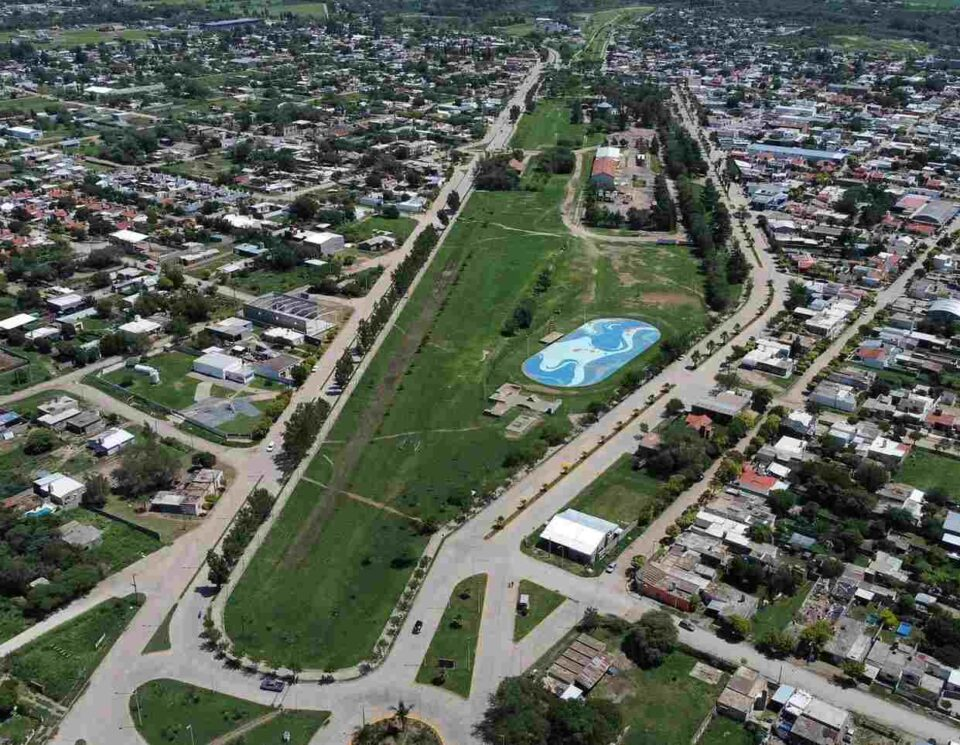
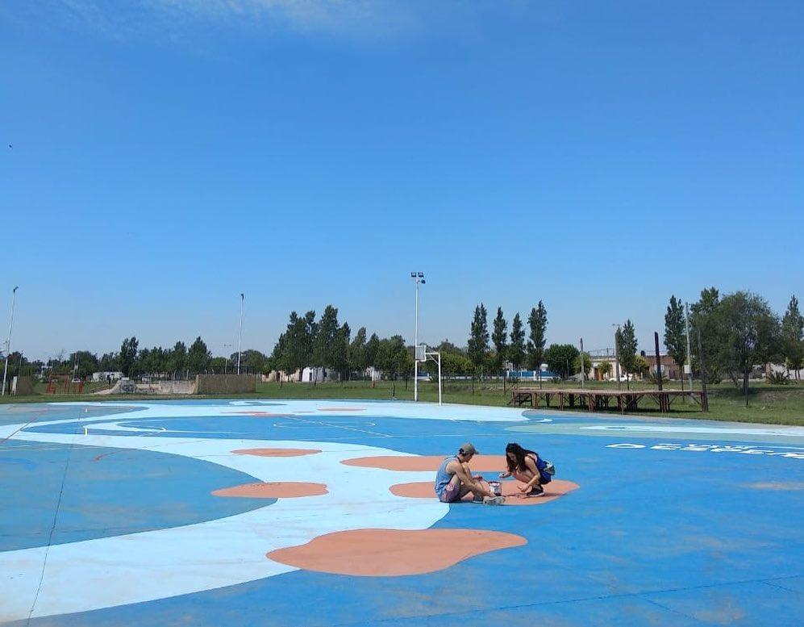
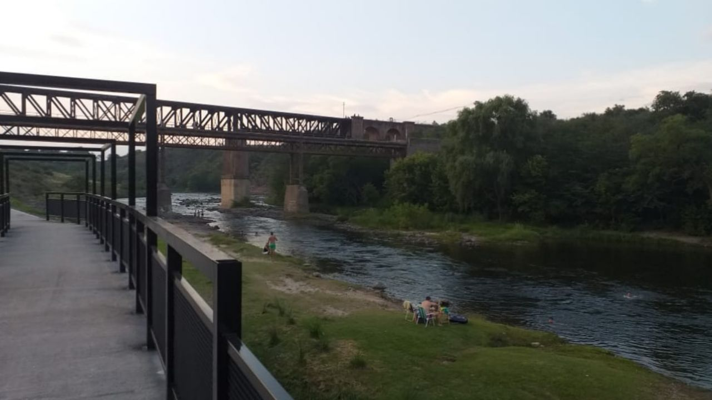
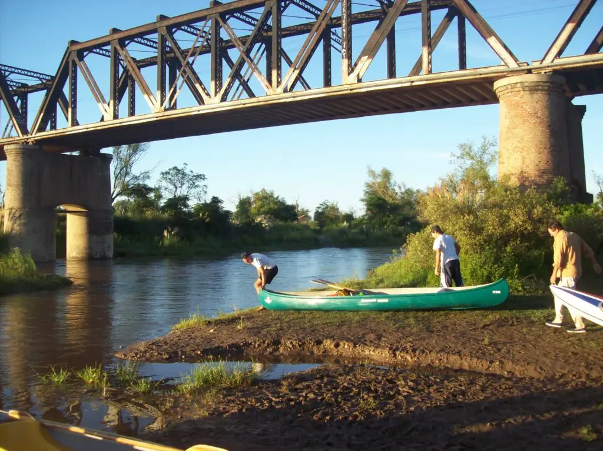
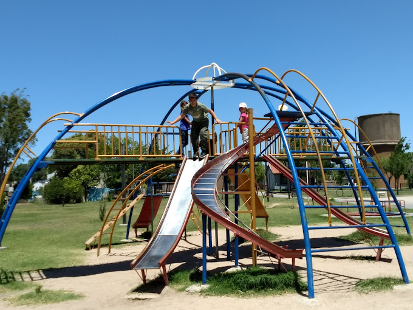
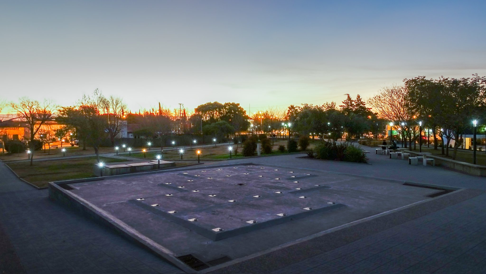

El Playón Municipal de Despeñaderos es un espacio recreativo ubicado en la localidad de Despeñaderos.Es un lugar destinado al esparcimiento y la práctica de deportes al aire libre.
La instalacion del lugar cuenta con una cancha deportiva multifuncional, que suele utilizarse para la práctica de fútbol, básquetbol, vóley y otras actividades recreativas.
Además, cuenta con áreas verdes donde se puede descansar, hacer picnic o disfrutar de un paseo al aire libre.
En el Playón Municipal se suelen realizar eventos deportivos, torneos y actividades recreativas para la comunidad. También puede ser utilizado por los vecinos y visitantes
para realizar actividades deportivas y recreativas de manera informal.
El acceso al Playón Municipal es generalmente gratuito y abierto al público. No obstante, te sugiero confirmar esta información con la municipalidad de Despeñaderos para asegurarte
de las condiciones actuales de acceso y uso de las instalaciones.
|  |  |
El río Xanaes es un importante curso de agua ubicado en la provincia de Córdoba, Argentina. Es uno de los ríos más importantes de la región y desempeña un papel significativo
tanto en el aspecto geográfico como en el cultural.
El río Xanaes tiene su origen en las sierras de Córdoba, en las proximidades de la localidad de Alta Gracia. A lo largo de su recorrido de aproximadamente 220 kilómetros, atraviesa varias localidades,
incluyendo Despeñaderos, que se encuentra en su curso medio.
El río Xanaes es conocido por sus aguas claras y su paisaje pintoresco. Sus riberas están cubiertas de vegetación, y su cauce serpenteante ofrece vistas panorámicas encantadoras.
El río es un atractivo para los amantes de la naturaleza y ofrece oportunidades para actividades recreativas como la pesca, el kayak y el senderismo.
En la localidad de Despeñaderos, el río Xanaes tiene un importante impacto en la vida cotidiana de la comunidad. Además de su valor estético y recreativo, el río también es una fuente de agua para uso agrícola y ganadero en la región.
|  |  |
La Plaza Eva Perón es un punto de encuentro y recreación para la comunidad local. Se encuentra en el centro de la localidad y es un lugar frecuentado tanto por residentes como por visitantes.
La plaza cuenta con áreas verdes, bancos, senderos para caminar y espacios abiertos para actividades al aire libre. Además, en la plaza se encuentran diversos monumentos y esculturas que rinden homenaje a Eva Perón y su legado.
Estos monumentos suelen ser puntos de referencia importantes y atraen a personas interesadas en la historia y la cultura argentina. La Plaza Eva Perón también es escenario de eventos y celebraciones comunitarias.
Se realizan actividades recreativas, culturales y sociales, como conciertos, festivales y ferias, en diferentes momentos del año.
|  |  |